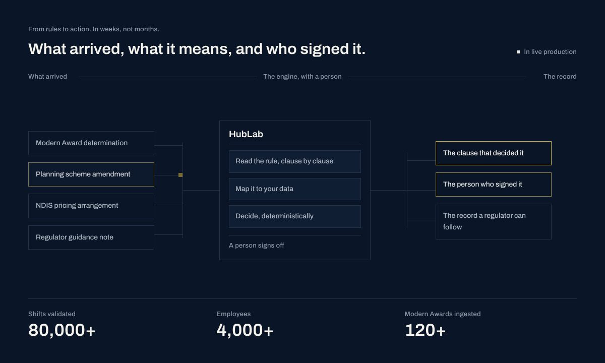
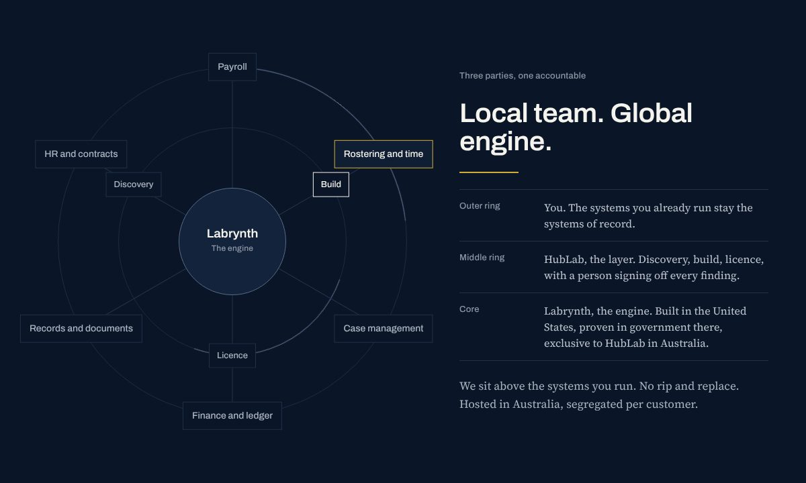
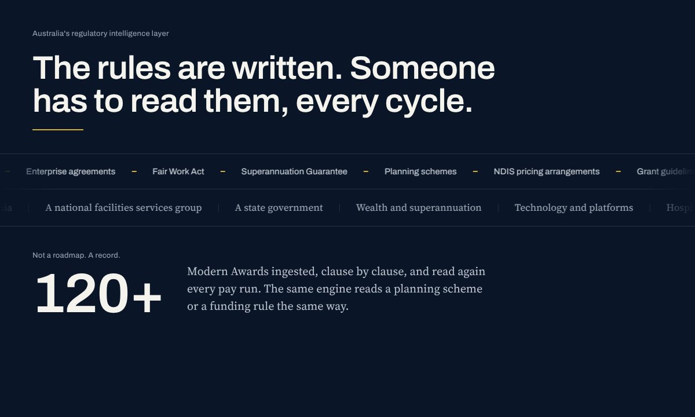

Read in this order
- The project brief (also as Word): scope, audience, site map, design rules, open items.
- The current build: the homepage as it should look and behave. Open it in Chrome, Safari or Edge with an internet connection so the fonts load. Try the Dark and Light buttons, the menu dropdowns, and a phone-width window.
- The approved copy: the only words the site may use.
- The design system and the logos.
- The animations and earlier versions below, for reference.
The current build
One page holding every component, both themes, the locked header with dropdowns, and all five animations. Build every other page from these parts.


Open the live page. The images are full-length captures; click one to see it whole.
The five animations
Each one on its own page, looping. All are plain CSS, settle on their last frame when the reader has reduced motion turned on, and appear in the current build in their final form.

1. Hero flow
A rule change enters, HubLab reads, maps and decides, a person signs off, the record comes out.

2. Orbit
Labrynth at the core, HubLab on the middle ring, your systems on the outside, signals in and back.

5. Ticker and count-ups
What the engine reads and where, scrolling; proof numbers counting up once.
These single pages are earlier cuts. Where wording or detail differs from the current build (for example the orbit's middle ring), the current build is right.
Earlier versions
Five homepage directions we explored before settling, then the mock that combined them. Superseded: use them for ideas, not for wording or layout.
References we are looking for
What to take from each, and what not to.
| Reference | Take from it | Do not take |
|---|---|---|
| credo.ai | The motion and page anatomy we adapted: an animated product flow in the hero, a ring diagram that builds, feature cards that animate their own proof, a continuous loop, a scrolling strip under the hero, one call to action repeated down the page | Their colours, gradients, logos, imagery or wording. Our versions are drawn in HubLab's own system |
| v2.ai | The tone: enterprise confidence, restraint, proof before claims, a multi-page site with a page per sector | Layout or assets |
| hublab.com.au | The site being replaced; it shows where we are starting from | Its wording, which predates the approved copy |
| Archivo and Source Serif 4 | The two typefaces, both free on Google Fonts. Load Archivo with its width axis (62 to 125) | Substitutes |
| WCAG 2.2 | The accessibility standard the site must meet, at level AA |
Live versions
Dean will share these with you; they open once he has. They are the same work as this pack, kept current.
| What | Link |
|---|---|
| Current build | claude.ai/artifact/Sn6gTqrPxMAVsKhTzfzZST |
| Project brief | claude.ai/artifact/Vfeoe8y2DFQJn7CdrVNNj9 |
| Design canvas (all versions side by side) | claude.ai/code/artifact/21545f16-4d5f-4300-a533-a7a1ba5b258f |
| Design system | claude.ai/code/artifact/07c606bf-2bec-44aa-a6a5-5fc2a04d28a2 |
What is in each folder
| Folder | Contents |
|---|---|
| 01_Brief | The project brief as PDF and Word |
| 02_Current_build | index.html, the current homepage, plus full-length previews at desktop and phone widths in both themes |
| 03_Animations | The five animations as single pages, with a still of each |
| 04_Earlier_versions | Directions A to E and the combined mock, with full-length previews |
| 05_Brand_assets | Logo lockups and symbols as SVG for navy and cream grounds, a gold single-ink symbol, an animated logo, and favicons (SVG, 16, 32 and 48px) |
| 06_Design_system | README with the rules, tokens.json and tokens.css, the language register, and the component styles |
| 07_Approved_copy | Press release, public FAQ and language register, as PDF and HTML |
Logo use: lockup on the left of the header, the navy-ground file on dark, the cream-ground file on light, clear space of one bar's height, never redrawn or recoloured. The light theme now sits on white, and the design system was written for cream grounds: use the cream-ground files on white and tell us if anything looks wrong.